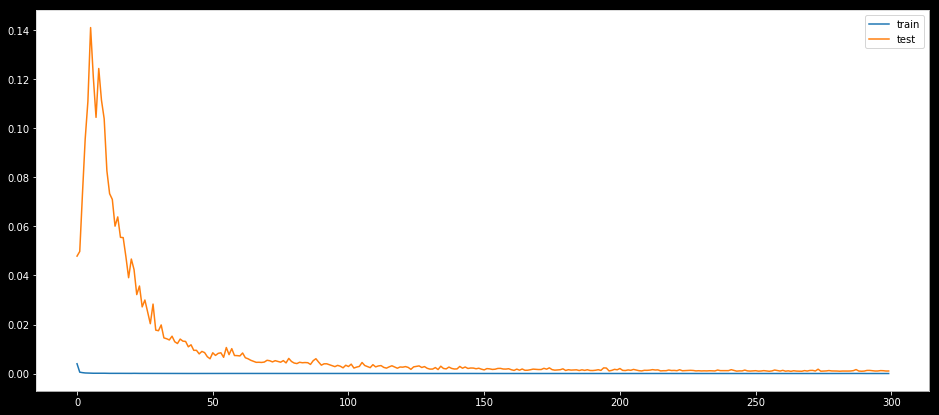
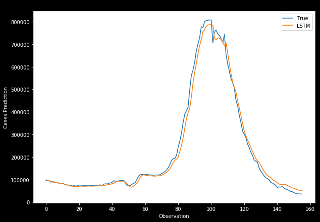

# Import various libraries and routines needed for computation
import math
import pandas as pd
import numpy as np
import tensorflow as tf
%matplotlib inline
import matplotlib.pyplot as plt
from math import sqrt
from numpy import concatenate
from matplotlib import pyplot
from pandas import read_csv
from pandas import DataFrame
from sklearn.preprocessing import MinMaxScaler, LabelEncoder
from sklearn.metrics import mean_squared_error, mean_absolute_error
from keras.models import Sequential
from keras.layers import Dense, Dropout
import keras.backend as K
from keras.layers import LSTM
from keras.callbacks import EarlyStopping
from datetime import date, timedelta, datetime Predicting covid cases with LSTM Machine Learning Model
plt.rcParams.update({
"lines.color": "white",
"patch.edgecolor": "white",
"text.color": "black",
"axes.facecolor": "white",
"axes.edgecolor": "lightgray",
"axes.labelcolor": "white",
"xtick.color": "white",
"ytick.color": "white",
"grid.color": "lightgray",
"figure.facecolor": "black",
"figure.edgecolor": "black",
"savefig.facecolor": "black",
"savefig.edgecolor": "black"})
plt.rcParams['figure.figsize'] = [10, 7]df = pd.read_csv('covid_final.csv')
dataset = df.set_index(['date'])
dataset.drop(dataset.tail(10).index,
inplace = True)
values = dataset.valuesdate_index = dataset.indexdata_clean = dataset.copy()
data_clean_ext = dataset.copy()
data_clean_ext['new_cases_predictions'] = data_clean_ext['new_cases_smoothed']
data_clean.tail()| new_cases_smoothed | reproduction_rate | new_tests_smoothed_per_thousand | new_vaccinations_smoothed_per_million | people_fully_vaccinated_per_hundred | total_boosters_per_hundred | stringency_index | |
|---|---|---|---|---|---|---|---|
| date | |||||||
| 2022-03-08 | 38934.286 | 0.65 | 2.748 | 621 | 65.24 | 28.89 | 53.24 |
| 2022-03-09 | 36641.429 | 0.66 | 2.699 | 601 | 65.25 | 28.91 | 53.24 |
| 2022-03-10 | 36330.429 | 0.69 | 2.613 | 583 | 65.27 | 28.94 | 53.24 |
| 2022-03-11 | 36104.714 | 0.71 | 2.580 | 557 | 65.29 | 28.97 | 53.24 |
| 2022-03-12 | 35464.143 | 0.71 | 2.561 | 540 | 65.30 | 28.99 | 53.24 |
# number of rows in the data
nrows = data_clean.shape[0]# Convert the data to numpy values
np_data_unscaled = np.array(data_clean)
np_data = np.reshape(np_data_unscaled, (nrows, -1))# ensure all data is float
values = values.astype('float64')# Transform the data by scaling each feature to a range between 0 and 1
scaler = MinMaxScaler()
np_data_scaled = scaler.fit_transform(np_data_unscaled)# Creating a separate scaler that works on a single column for scaling predictions
scaler_pred = MinMaxScaler()
df_cases = pd.DataFrame(data_clean_ext['new_cases_smoothed'])
np_cases_scaled = scaler_pred.fit_transform(df_cases)# Set the sequence length - this is the timeframe used to make a single prediction
sequence_length = 31
# Prediction Index
index_cases = dataset.columns.get_loc("new_cases_smoothed")
# Split the training data into train and train data sets
# As a first step, we get the number of rows to train the model on 80% of the data
train_data_len = math.ceil(np_data_scaled.shape[0] * 0.8)
# Create the training and test data
train_data = np_data_scaled[0:train_data_len, :]
test_data = np_data_scaled[train_data_len - sequence_length:, :]
# The RNN needs data with the format of [samples, time steps, features]
# Here, we create N samples, sequence_length time steps per sample, and 6 features
def partition_dataset(sequence_length, data):
x, y = [], []
data_len = data.shape[0]
for i in range(sequence_length, data_len):
x.append(data[i-sequence_length:i,:]) #contains sequence_length values 0-sequence_length * columsn
y.append(data[i, index_cases]) #contains the prediction values for validation, for single-step prediction
# Convert the x and y to numpy arrays
x = np.array(x)
y = np.array(y)
return x, y
# Generate training data and test data
x_train, y_train = partition_dataset(sequence_length, train_data)
x_test, y_test = partition_dataset(sequence_length, test_data)
# Configure the neural network model
model = Sequential()
# Model with n_neurons = inputshape Timestamps, each with x_train.shape[2] variables
n_neurons = x_train.shape[1] * x_train.shape[2]
model.add(LSTM(n_neurons, return_sequences=False, input_shape=(x_train.shape[1], x_train.shape[2])))
model.add(Dense(1))from tensorflow.keras.callbacks import ModelCheckpoint, EarlyStopping
# Compiling the LSTM
model.compile(optimizer = 'adam', loss = 'mean_squared_error')checkpoint_path = 'my_best_model.hdf5'
checkpoint = ModelCheckpoint(filepath=checkpoint_path,
monitor='val_loss',
verbose=1,
save_best_only=True,
mode='min')
earlystopping = EarlyStopping(monitor='val_loss', patience=50, restore_best_weights=True, verbose =0)
callbacks = [checkpoint, earlystopping]# Training the model
epochs = 300
batch_size = 20
history = model.fit(x_train, y_train,
batch_size=batch_size,
epochs=epochs,
validation_data=(x_test, y_test),
callbacks = callbacks,
verbose = 0)
Epoch 00001: val_loss improved from inf to 0.04791, saving model to my_best_model.hdf5
Epoch 00002: val_loss did not improve from 0.04791
Epoch 00003: val_loss did not improve from 0.04791
Epoch 00004: val_loss did not improve from 0.04791
Epoch 00005: val_loss did not improve from 0.04791
Epoch 00006: val_loss did not improve from 0.04791
Epoch 00007: val_loss did not improve from 0.04791
Epoch 00008: val_loss did not improve from 0.04791
Epoch 00009: val_loss did not improve from 0.04791
Epoch 00010: val_loss did not improve from 0.04791
Epoch 00011: val_loss did not improve from 0.04791
Epoch 00012: val_loss did not improve from 0.04791
Epoch 00013: val_loss did not improve from 0.04791
Epoch 00014: val_loss did not improve from 0.04791
Epoch 00015: val_loss did not improve from 0.04791
Epoch 00016: val_loss did not improve from 0.04791
Epoch 00017: val_loss did not improve from 0.04791
Epoch 00018: val_loss did not improve from 0.04791
Epoch 00019: val_loss improved from 0.04791 to 0.04770, saving model to my_best_model.hdf5
Epoch 00020: val_loss improved from 0.04770 to 0.03909, saving model to my_best_model.hdf5
Epoch 00021: val_loss did not improve from 0.03909
Epoch 00022: val_loss did not improve from 0.03909
Epoch 00023: val_loss improved from 0.03909 to 0.03220, saving model to my_best_model.hdf5
Epoch 00024: val_loss did not improve from 0.03220
Epoch 00025: val_loss improved from 0.03220 to 0.02719, saving model to my_best_model.hdf5
Epoch 00026: val_loss did not improve from 0.02719
Epoch 00027: val_loss improved from 0.02719 to 0.02522, saving model to my_best_model.hdf5
Epoch 00028: val_loss improved from 0.02522 to 0.02033, saving model to my_best_model.hdf5
Epoch 00029: val_loss did not improve from 0.02033
Epoch 00030: val_loss improved from 0.02033 to 0.01771, saving model to my_best_model.hdf5
Epoch 00031: val_loss improved from 0.01771 to 0.01746, saving model to my_best_model.hdf5
Epoch 00032: val_loss did not improve from 0.01746
Epoch 00033: val_loss improved from 0.01746 to 0.01453, saving model to my_best_model.hdf5
Epoch 00034: val_loss improved from 0.01453 to 0.01420, saving model to my_best_model.hdf5
Epoch 00035: val_loss improved from 0.01420 to 0.01369, saving model to my_best_model.hdf5
Epoch 00036: val_loss did not improve from 0.01369
Epoch 00037: val_loss improved from 0.01369 to 0.01296, saving model to my_best_model.hdf5
Epoch 00038: val_loss improved from 0.01296 to 0.01224, saving model to my_best_model.hdf5
Epoch 00039: val_loss did not improve from 0.01224
Epoch 00040: val_loss did not improve from 0.01224
Epoch 00041: val_loss did not improve from 0.01224
Epoch 00042: val_loss improved from 0.01224 to 0.01090, saving model to my_best_model.hdf5
Epoch 00043: val_loss did not improve from 0.01090
Epoch 00044: val_loss improved from 0.01090 to 0.00946, saving model to my_best_model.hdf5
Epoch 00045: val_loss did not improve from 0.00946
Epoch 00046: val_loss improved from 0.00946 to 0.00801, saving model to my_best_model.hdf5
Epoch 00047: val_loss did not improve from 0.00801
Epoch 00048: val_loss did not improve from 0.00801
Epoch 00049: val_loss improved from 0.00801 to 0.00685, saving model to my_best_model.hdf5
Epoch 00050: val_loss improved from 0.00685 to 0.00602, saving model to my_best_model.hdf5
Epoch 00051: val_loss did not improve from 0.00602
Epoch 00052: val_loss did not improve from 0.00602
Epoch 00053: val_loss did not improve from 0.00602
Epoch 00054: val_loss did not improve from 0.00602
Epoch 00055: val_loss did not improve from 0.00602
Epoch 00056: val_loss did not improve from 0.00602
Epoch 00057: val_loss did not improve from 0.00602
Epoch 00058: val_loss did not improve from 0.00602
Epoch 00059: val_loss did not improve from 0.00602
Epoch 00060: val_loss did not improve from 0.00602
Epoch 00061: val_loss did not improve from 0.00602
Epoch 00062: val_loss did not improve from 0.00602
Epoch 00063: val_loss did not improve from 0.00602
Epoch 00064: val_loss improved from 0.00602 to 0.00601, saving model to my_best_model.hdf5
Epoch 00065: val_loss improved from 0.00601 to 0.00540, saving model to my_best_model.hdf5
Epoch 00066: val_loss improved from 0.00540 to 0.00501, saving model to my_best_model.hdf5
Epoch 00067: val_loss improved from 0.00501 to 0.00456, saving model to my_best_model.hdf5
Epoch 00068: val_loss did not improve from 0.00456
Epoch 00069: val_loss improved from 0.00456 to 0.00452, saving model to my_best_model.hdf5
Epoch 00070: val_loss did not improve from 0.00452
Epoch 00071: val_loss did not improve from 0.00452
Epoch 00072: val_loss did not improve from 0.00452
Epoch 00073: val_loss did not improve from 0.00452
Epoch 00074: val_loss did not improve from 0.00452
Epoch 00075: val_loss did not improve from 0.00452
Epoch 00076: val_loss did not improve from 0.00452
Epoch 00077: val_loss did not improve from 0.00452
Epoch 00078: val_loss improved from 0.00452 to 0.00433, saving model to my_best_model.hdf5
Epoch 00079: val_loss did not improve from 0.00433
Epoch 00080: val_loss did not improve from 0.00433
Epoch 00081: val_loss improved from 0.00433 to 0.00428, saving model to my_best_model.hdf5
Epoch 00082: val_loss improved from 0.00428 to 0.00406, saving model to my_best_model.hdf5
Epoch 00083: val_loss did not improve from 0.00406
Epoch 00084: val_loss did not improve from 0.00406
Epoch 00085: val_loss did not improve from 0.00406
Epoch 00086: val_loss did not improve from 0.00406
Epoch 00087: val_loss improved from 0.00406 to 0.00371, saving model to my_best_model.hdf5
Epoch 00088: val_loss did not improve from 0.00371
Epoch 00089: val_loss did not improve from 0.00371
Epoch 00090: val_loss did not improve from 0.00371
Epoch 00091: val_loss improved from 0.00371 to 0.00341, saving model to my_best_model.hdf5
Epoch 00092: val_loss did not improve from 0.00341
Epoch 00093: val_loss did not improve from 0.00341
Epoch 00094: val_loss did not improve from 0.00341
Epoch 00095: val_loss improved from 0.00341 to 0.00317, saving model to my_best_model.hdf5
Epoch 00096: val_loss improved from 0.00317 to 0.00281, saving model to my_best_model.hdf5
Epoch 00097: val_loss did not improve from 0.00281
Epoch 00098: val_loss did not improve from 0.00281
Epoch 00099: val_loss improved from 0.00281 to 0.00233, saving model to my_best_model.hdf5
Epoch 00100: val_loss did not improve from 0.00233
Epoch 00101: val_loss did not improve from 0.00233
Epoch 00102: val_loss did not improve from 0.00233
Epoch 00103: val_loss improved from 0.00233 to 0.00224, saving model to my_best_model.hdf5
Epoch 00104: val_loss did not improve from 0.00224
Epoch 00105: val_loss did not improve from 0.00224
Epoch 00106: val_loss did not improve from 0.00224
Epoch 00107: val_loss did not improve from 0.00224
Epoch 00108: val_loss did not improve from 0.00224
Epoch 00109: val_loss did not improve from 0.00224
Epoch 00110: val_loss did not improve from 0.00224
Epoch 00111: val_loss did not improve from 0.00224
Epoch 00112: val_loss did not improve from 0.00224
Epoch 00113: val_loss did not improve from 0.00224
Epoch 00114: val_loss did not improve from 0.00224
Epoch 00115: val_loss improved from 0.00224 to 0.00220, saving model to my_best_model.hdf5
Epoch 00116: val_loss did not improve from 0.00220
Epoch 00117: val_loss did not improve from 0.00220
Epoch 00118: val_loss did not improve from 0.00220
Epoch 00119: val_loss improved from 0.00220 to 0.00216, saving model to my_best_model.hdf5
Epoch 00120: val_loss did not improve from 0.00216
Epoch 00121: val_loss did not improve from 0.00216
Epoch 00122: val_loss did not improve from 0.00216
Epoch 00123: val_loss did not improve from 0.00216
Epoch 00124: val_loss improved from 0.00216 to 0.00171, saving model to my_best_model.hdf5
Epoch 00125: val_loss did not improve from 0.00171
Epoch 00126: val_loss did not improve from 0.00171
Epoch 00127: val_loss did not improve from 0.00171
Epoch 00128: val_loss did not improve from 0.00171
Epoch 00129: val_loss did not improve from 0.00171
Epoch 00130: val_loss did not improve from 0.00171
Epoch 00131: val_loss did not improve from 0.00171
Epoch 00132: val_loss did not improve from 0.00171
Epoch 00133: val_loss did not improve from 0.00171
Epoch 00134: val_loss improved from 0.00171 to 0.00161, saving model to my_best_model.hdf5
Epoch 00135: val_loss did not improve from 0.00161
Epoch 00136: val_loss did not improve from 0.00161
Epoch 00137: val_loss did not improve from 0.00161
Epoch 00138: val_loss did not improve from 0.00161
Epoch 00139: val_loss did not improve from 0.00161
Epoch 00140: val_loss did not improve from 0.00161
Epoch 00141: val_loss did not improve from 0.00161
Epoch 00142: val_loss did not improve from 0.00161
Epoch 00143: val_loss did not improve from 0.00161
Epoch 00144: val_loss did not improve from 0.00161
Epoch 00145: val_loss did not improve from 0.00161
Epoch 00146: val_loss did not improve from 0.00161
Epoch 00147: val_loss did not improve from 0.00161
Epoch 00148: val_loss did not improve from 0.00161
Epoch 00149: val_loss did not improve from 0.00161
Epoch 00150: val_loss did not improve from 0.00161
Epoch 00151: val_loss improved from 0.00161 to 0.00149, saving model to my_best_model.hdf5
Epoch 00152: val_loss did not improve from 0.00149
Epoch 00153: val_loss did not improve from 0.00149
Epoch 00154: val_loss did not improve from 0.00149
Epoch 00155: val_loss did not improve from 0.00149
Epoch 00156: val_loss did not improve from 0.00149
Epoch 00157: val_loss did not improve from 0.00149
Epoch 00158: val_loss did not improve from 0.00149
Epoch 00159: val_loss did not improve from 0.00149
Epoch 00160: val_loss did not improve from 0.00149
Epoch 00161: val_loss did not improve from 0.00149
Epoch 00162: val_loss improved from 0.00149 to 0.00127, saving model to my_best_model.hdf5
Epoch 00163: val_loss did not improve from 0.00127
Epoch 00164: val_loss did not improve from 0.00127
Epoch 00165: val_loss did not improve from 0.00127
Epoch 00166: val_loss did not improve from 0.00127
Epoch 00167: val_loss did not improve from 0.00127
Epoch 00168: val_loss did not improve from 0.00127
Epoch 00169: val_loss did not improve from 0.00127
Epoch 00170: val_loss did not improve from 0.00127
Epoch 00171: val_loss did not improve from 0.00127
Epoch 00172: val_loss did not improve from 0.00127
Epoch 00173: val_loss did not improve from 0.00127
Epoch 00174: val_loss did not improve from 0.00127
Epoch 00175: val_loss did not improve from 0.00127
Epoch 00176: val_loss did not improve from 0.00127
Epoch 00177: val_loss did not improve from 0.00127
Epoch 00178: val_loss did not improve from 0.00127
Epoch 00179: val_loss did not improve from 0.00127
Epoch 00180: val_loss did not improve from 0.00127
Epoch 00181: val_loss improved from 0.00127 to 0.00125, saving model to my_best_model.hdf5
Epoch 00182: val_loss did not improve from 0.00125
Epoch 00183: val_loss did not improve from 0.00125
Epoch 00184: val_loss did not improve from 0.00125
Epoch 00185: val_loss did not improve from 0.00125
Epoch 00186: val_loss improved from 0.00125 to 0.00123, saving model to my_best_model.hdf5
Epoch 00187: val_loss did not improve from 0.00123
Epoch 00188: val_loss did not improve from 0.00123
Epoch 00189: val_loss did not improve from 0.00123
Epoch 00190: val_loss did not improve from 0.00123
Epoch 00191: val_loss improved from 0.00123 to 0.00122, saving model to my_best_model.hdf5
Epoch 00192: val_loss did not improve from 0.00122
Epoch 00193: val_loss did not improve from 0.00122
Epoch 00194: val_loss did not improve from 0.00122
Epoch 00195: val_loss did not improve from 0.00122
Epoch 00196: val_loss did not improve from 0.00122
Epoch 00197: val_loss improved from 0.00122 to 0.00105, saving model to my_best_model.hdf5
Epoch 00198: val_loss did not improve from 0.00105
Epoch 00199: val_loss did not improve from 0.00105
Epoch 00200: val_loss did not improve from 0.00105
Epoch 00201: val_loss did not improve from 0.00105
Epoch 00202: val_loss did not improve from 0.00105
Epoch 00203: val_loss did not improve from 0.00105
Epoch 00204: val_loss did not improve from 0.00105
Epoch 00205: val_loss did not improve from 0.00105
Epoch 00206: val_loss did not improve from 0.00105
Epoch 00207: val_loss did not improve from 0.00105
Epoch 00208: val_loss did not improve from 0.00105
Epoch 00209: val_loss did not improve from 0.00105
Epoch 00210: val_loss did not improve from 0.00105
Epoch 00211: val_loss did not improve from 0.00105
Epoch 00212: val_loss did not improve from 0.00105
Epoch 00213: val_loss did not improve from 0.00105
Epoch 00214: val_loss did not improve from 0.00105
Epoch 00215: val_loss did not improve from 0.00105
Epoch 00216: val_loss did not improve from 0.00105
Epoch 00217: val_loss did not improve from 0.00105
Epoch 00218: val_loss did not improve from 0.00105
Epoch 00219: val_loss did not improve from 0.00105
Epoch 00220: val_loss did not improve from 0.00105
Epoch 00221: val_loss did not improve from 0.00105
Epoch 00222: val_loss did not improve from 0.00105
Epoch 00223: val_loss did not improve from 0.00105
Epoch 00224: val_loss did not improve from 0.00105
Epoch 00225: val_loss did not improve from 0.00105
Epoch 00226: val_loss did not improve from 0.00105
Epoch 00227: val_loss did not improve from 0.00105
Epoch 00228: val_loss did not improve from 0.00105
Epoch 00229: val_loss did not improve from 0.00105
Epoch 00230: val_loss did not improve from 0.00105
Epoch 00231: val_loss improved from 0.00105 to 0.00105, saving model to my_best_model.hdf5
Epoch 00232: val_loss did not improve from 0.00105
Epoch 00233: val_loss did not improve from 0.00105
Epoch 00234: val_loss did not improve from 0.00105
Epoch 00235: val_loss did not improve from 0.00105
Epoch 00236: val_loss improved from 0.00105 to 0.00105, saving model to my_best_model.hdf5
Epoch 00237: val_loss did not improve from 0.00105
Epoch 00238: val_loss did not improve from 0.00105
Epoch 00239: val_loss did not improve from 0.00105
Epoch 00240: val_loss did not improve from 0.00105
Epoch 00241: val_loss did not improve from 0.00105
Epoch 00242: val_loss did not improve from 0.00105
Epoch 00243: val_loss did not improve from 0.00105
Epoch 00244: val_loss improved from 0.00105 to 0.00097, saving model to my_best_model.hdf5
Epoch 00245: val_loss did not improve from 0.00097
Epoch 00246: val_loss did not improve from 0.00097
Epoch 00247: val_loss did not improve from 0.00097
Epoch 00248: val_loss did not improve from 0.00097
Epoch 00249: val_loss did not improve from 0.00097
Epoch 00250: val_loss did not improve from 0.00097
Epoch 00251: val_loss did not improve from 0.00097
Epoch 00252: val_loss did not improve from 0.00097
Epoch 00253: val_loss did not improve from 0.00097
Epoch 00254: val_loss did not improve from 0.00097
Epoch 00255: val_loss did not improve from 0.00097
Epoch 00256: val_loss improved from 0.00097 to 0.00092, saving model to my_best_model.hdf5
Epoch 00257: val_loss did not improve from 0.00092
Epoch 00258: val_loss did not improve from 0.00092
Epoch 00259: val_loss did not improve from 0.00092
Epoch 00260: val_loss did not improve from 0.00092
Epoch 00261: val_loss did not improve from 0.00092
Epoch 00262: val_loss did not improve from 0.00092
Epoch 00263: val_loss did not improve from 0.00092
Epoch 00264: val_loss improved from 0.00092 to 0.00090, saving model to my_best_model.hdf5
Epoch 00265: val_loss did not improve from 0.00090
Epoch 00266: val_loss did not improve from 0.00090
Epoch 00267: val_loss did not improve from 0.00090
Epoch 00268: val_loss did not improve from 0.00090
Epoch 00269: val_loss did not improve from 0.00090
Epoch 00270: val_loss did not improve from 0.00090
Epoch 00271: val_loss did not improve from 0.00090
Epoch 00272: val_loss did not improve from 0.00090
Epoch 00273: val_loss did not improve from 0.00090
Epoch 00274: val_loss did not improve from 0.00090
Epoch 00275: val_loss did not improve from 0.00090
Epoch 00276: val_loss did not improve from 0.00090
Epoch 00277: val_loss did not improve from 0.00090
Epoch 00278: val_loss did not improve from 0.00090
Epoch 00279: val_loss did not improve from 0.00090
Epoch 00280: val_loss did not improve from 0.00090
Epoch 00281: val_loss did not improve from 0.00090
Epoch 00282: val_loss did not improve from 0.00090
Epoch 00283: val_loss did not improve from 0.00090
Epoch 00284: val_loss did not improve from 0.00090
Epoch 00285: val_loss did not improve from 0.00090
Epoch 00286: val_loss did not improve from 0.00090
Epoch 00287: val_loss did not improve from 0.00090
Epoch 00288: val_loss did not improve from 0.00090
Epoch 00289: val_loss did not improve from 0.00090
Epoch 00290: val_loss did not improve from 0.00090
Epoch 00291: val_loss did not improve from 0.00090
Epoch 00292: val_loss did not improve from 0.00090
Epoch 00293: val_loss did not improve from 0.00090
Epoch 00294: val_loss did not improve from 0.00090
Epoch 00295: val_loss did not improve from 0.00090
Epoch 00296: val_loss did not improve from 0.00090
Epoch 00297: val_loss did not improve from 0.00090
Epoch 00298: val_loss did not improve from 0.00090
Epoch 00299: val_loss did not improve from 0.00090
Epoch 00300: val_loss did not improve from 0.00090from tensorflow.keras.models import load_model
model_from_saved_checkpoint = load_model(checkpoint_path)# Plot training & validation loss values
plt.figure(figsize=(16,7))
plt.plot(history.history['loss'], label='train')
plt.plot(history.history['val_loss'], label='test')
plt.legend()
plt.show()
# Get the predicted values
y_pred_scaled = model_from_saved_checkpoint.predict(x_test)# Unscale the predicted values
y_pred = scaler_pred.inverse_transform(y_pred_scaled)y_test_unscaled = scaler_pred.inverse_transform(y_test.reshape(-1, 1))# Mean Absolute Error (MAE)
MAE = mean_absolute_error(y_test_unscaled, y_pred)
print(f'Median Absolute Error (MAE): {np.round(MAE, 2)}')
# Mean Absolute Percentage Error (MAPE)
MAPE = np.mean((np.abs(np.subtract(y_test_unscaled, y_pred)/ y_test_unscaled))) * 100
print(f'Mean Absolute Percentage Error (MAPE): {np.round(MAPE, 2)} %')
# Median Absolute Percentage Error (MDAPE)
MDAPE = np.median((np.abs(np.subtract(y_test_unscaled, y_pred)/ y_test_unscaled)) ) * 100
print(f'Median Absolute Percentage Error (MDAPE): {np.round(MDAPE, 2)} %')Median Absolute Error (MAE): 16315.09
Mean Absolute Percentage Error (MAPE): 9.79 %
Median Absolute Percentage Error (MDAPE): 5.88 %plt.plot(y_test_unscaled, label='True')
plt.plot(y_pred, label='LSTM')
plt.title("LSTM's_Prediction")
plt.xlabel('Observation')
plt.ylabel('Cases Prediction')
plt.legend()
plt.show()
new_df = data_clean[-sequence_length:]
N = sequence_length# Get the last N day closing price values and scale the data to be values between 0 and 1
last_N_days = new_df[-sequence_length:].values
last_N_days_scaled = scaler.transform(last_N_days)# Create an empty list and Append past N days
X_test_new = []
X_test_new.append(last_N_days_scaled)
# Convert the X_test data set to a numpy array and reshape the data
pred_cases_scaled = model_from_saved_checkpoint.predict(np.array(X_test_new))
pred_cases_unscaled = scaler_pred.inverse_transform(pred_cases_scaled.reshape(-1, 1))# Print last price and predicted price for the next day
cases_today = np.round(new_df['new_cases_smoothed'][-1])
predicted_cases = np.round(pred_cases_unscaled.ravel()[0])
change_percent = np.round(100 - (cases_today * 100)/predicted_cases)plus = '+'; minus = ''
print(f'The close covid cases count today is {cases_today}')
print(f'The predicted case count for the next day is {predicted_cases} ({plus if change_percent > 0 else minus}{change_percent}%)')The close covid cases count today is 35464.0
The predicted case count for the next day is 50879.0 (+30.0%)!jupyter nbconvert covid_analysis.ipynb --to markdown --NbConvertApp.output_files_dir=.
#!cat covid_analysis.md | tee -a index.md
!rm covid_analysis.md[NbConvertApp] Converting notebook covid_analysis.ipynb to markdown